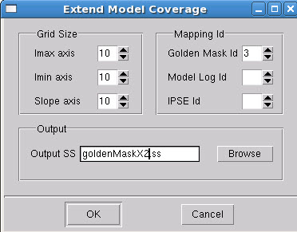
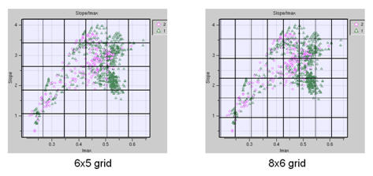

If you have an
existing golden mask, you may want to add test patterns from the
golden mask to cover image parameters not covered by the calibration patterns.
Follow these steps to get golden patterns to be added to the calibration spreadsheet.
Prerequisites
A
Modelflow (v1 or v2) log file from the nominal process loaded into
the Bivariate Plot tab (already completed
if you performed the task, “Working With the Results of a Simulation”).
A
Modelflow (v1 or v2) log file from the golden mask.
Procedure
- Use the menu
item to load the Modelflow log file from the golden mask process.
- Select
the menu
item. In the dialog box that appears, fill out the following fields:
Figure 1. IPSE Extend Model
Coverage Dialog Box
Grid Size — Use the Grid
Size controls to limit the intervals of the grid selection criteria.
Each field affects the specified parameter interval. Grids are overlaid
on the image parameter space by dividing up the space according
to the values selected. For example, in Figure 2, values of 6 for slope and 5 for Imax
were used in the left illustration, and values of 8 for Slope and 6
for Imax were used in the right illustration. See the Results section
below for an explanation of how the grid selections are used.
Figure 2. Grid Intervals for
the GoldenMaskX Tool
Mapping Id
Golden Mask Id — Set this
to the line in the Bivariate Plot tab that
contains the Modelflow log from the golden mask process.
Model Log Id — Set this
to the line in the Bivariate Plot tab that
contains the Modelflow log from your nominal process.
IPSE Id — Set this to
the line in the Bivariate Plot tab that contains
the output from running the IPSE simulation.
Output SS — Set this field
to the output file name for the spreadsheet.
- Click OK to
output the golden mask spreadsheet file.
Results
Calibre IPSE outputs a spreadsheet
to be added to the calibration spreadsheet. This spreadsheet file
that contains only the golden mask structures that most closely
correspond to the IPSE test coverage area as determined by the grid
overlay. The selection criteria used is as follows:
Table 1. Selection Criteria for IPSE Test CoverageOrder
|
Criteria
|
|---|
1
|
Any sample point under
a grid area from the IPSE coverage simulation (set 1) that has a
corresponding sample point in the modelflow log from the nominal
process (set 2) is considered covered, and is skipped.
|
2
|
If the sample points
from set 2 do not cover the IPSE sample point from set 1, the golden
mask space (set 3) is checked for a corresponding sample point that
can cover the IPSE simulation (set 1). If a point in the golden
mask exists, select it for export (the golden mask can cover that
IPSE point) and increment the count of exported points by 1.
|
3
|
If neither the nominal
process (set 2) nor the golden pattern (set 3) can cover the IPSE
sample space, add 1 to the count of points not covered at all by
the nominal process or golden mask parameters.
|
4
|
Check the next grid point.
|
5
|
When all the grid points
have been checked, provide a report.
|